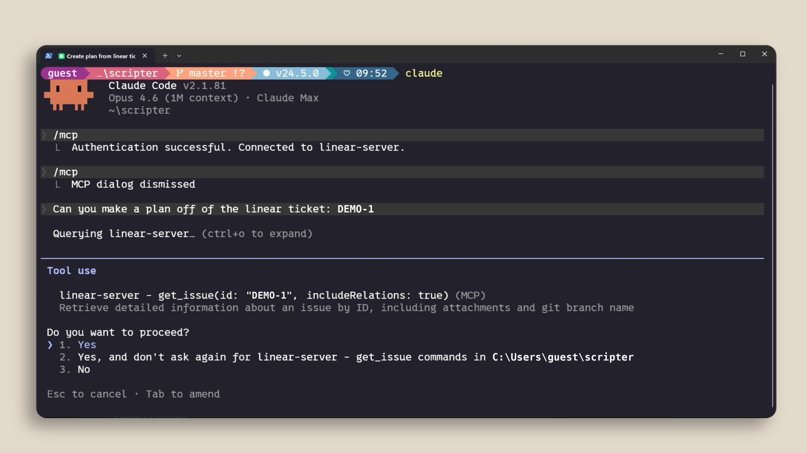
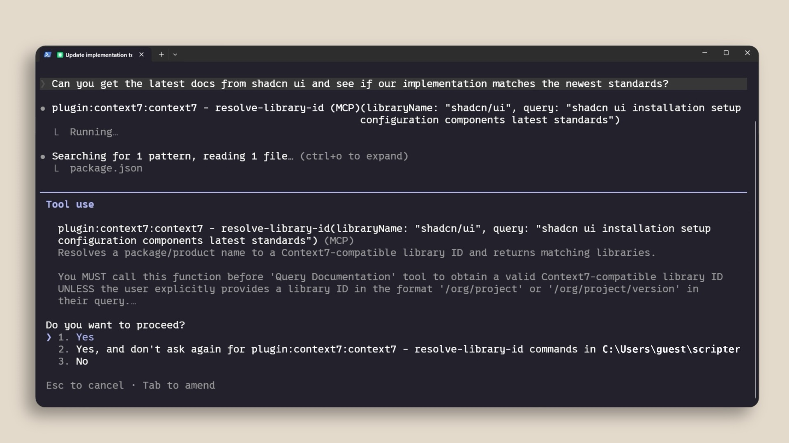
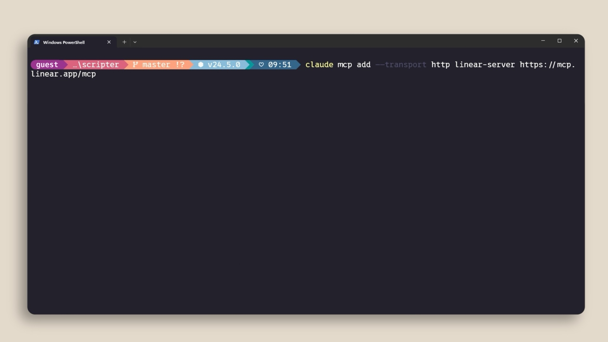
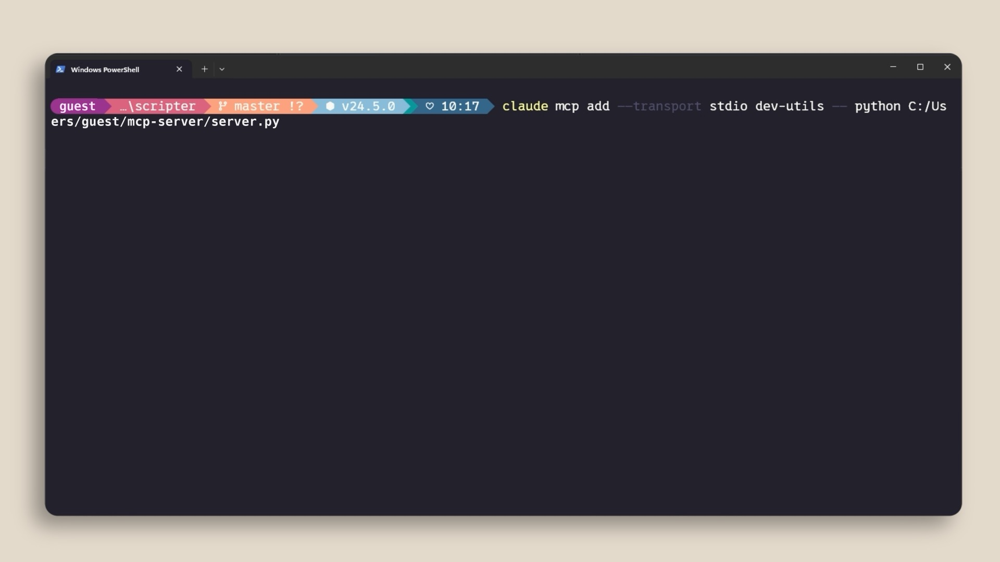
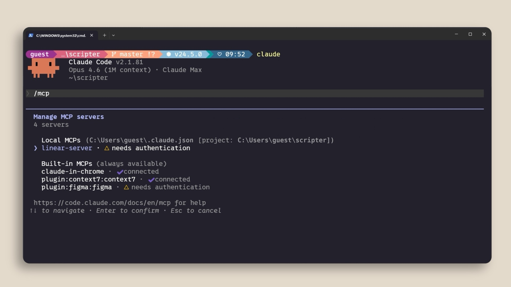
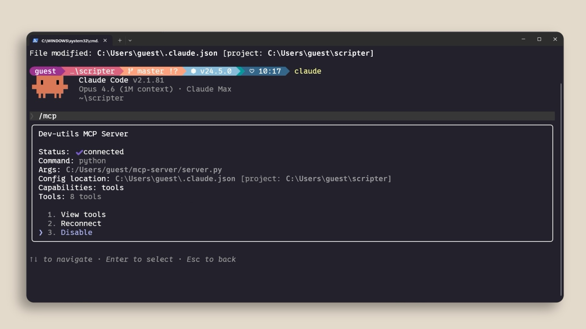

MCP
Чему научитесь
Видео 3:37 и текст урока
К концу урока вы сможете:
- объяснить, что такое MCP и зачем подключать к Claude Code внешние инструменты и источники данных;
- добавлять HTTP- и stdio-серверы командой
claude mcp addи управлять ими через/mcp; - выбирать область действия сервера — local, user или project (файл
.mcp.json); - беречь контекст: отключать лишние серверы, предпочитать CLI и добавлять к серверам skills.
Видео и текст урока.
Model Context Protocol (MCP) — открытый стандарт, который позволяет Claude Code подключаться к внешним инструментам и источникам данных. Когда вы задаёте вопрос, Claude сам понимает, в каких случаях стоит воспользоваться этими инструментами, чтобы лучше справиться с запросом.
Многое из вашего контекста находится за пределами кодовой базы — в базах данных, рабочих приложениях, публичных репозиториях. MCP восполняет этот пробел.
Что с ним можно делать?
Сначала важно понять, что в агентном ИИ называют «инструментами». Инструменты дают агентам вроде Claude Code возможность выполнять действия, которые помогают им эффективнее справляться с задачами. В этом отличие от обычного ИИ, который просто возвращает текстовый ответ.
Например, если ваша команда ведёт проекты в Linear, можно добавить MCP-сервер Linear и подтягивать подробности конкретных задач. Если нужна актуальная документация по зависимости, MCP-сервер с документацией, например Context7, может передать её Claude Code.

get_issue).
Как добавить MCP-сервер
MCP-серверы добавляют командой claude mcp add. Есть два основных типа серверов:

claude mcp add.- HTTP-серверы — для удалённых сервисов. Их размещает у себя поставщик сервиса, а подключение идёт по сети.
- Stdio-серверы — для локальных процессов, которые работают на вашем компьютере.

server.py.Управлять серверами можно командой /mcp внутри сессии Claude Code: посмотреть, что подключено, проверить статус и отключить ненужные серверы.

/mcp: подключённые серверы и их статус.Области действия серверов
У MCP-сервера может быть одна из трёх областей действия:
- Local — сервер доступен только в текущем проекте и только вам.
- User — доступен во всех ваших проектах.
- Project — использует файл
.mcp.json, который вы добавляете в систему контроля версий, чтобы все, кто работает с кодовой базой, автоматически получали точно такой же набор серверов.
Расход контекста
MCP-серверы добавляют в окно контекста имена своих инструментов и инструкции, даже когда вы ими сейчас не пользуетесь. Каждый подключённый сервер занимает какое-то место, поэтому запустите /mcp, посмотрите, что подключено, и отключите всё, чем сейчас не пользуетесь.

/mcp: посмотреть инструменты, переподключить или отключить сервер.Если у инструмента есть аналог в виде CLI (например, gh для GitHub или aws для AWS), CLI экономнее расходует контекст: он не добавляет в него запись для каждого инструмента.
Бывает также полезно добавить к MCP-серверу skill, который учит Claude хорошо пользоваться инструментами этого сервера. От skill в контекст загружаются только имя и описание, а полное содержимое Claude подгружает, лишь когда решит, что skill нужен.
Поиск инструментов (tool search) включён по умолчанию, поэтому Claude Code не держит в контексте полное определение каждого MCP-инструмента, пока оно не понадобится Claude.
Итог
MCP подключает Claude Code к вашим внешним инструментам и источникам данных. Серверы добавляют командой claude mcp add. Задайте им область действия project через .mcp.json — и команда получит их автоматически. И следите за расходом контекста: отключайте серверы, которыми сейчас не пользуетесь.
Дальше
Следующий урок — «Hooks»: как запускать команды в определённые моменты работы Claude Code. В отличие от инструкций, hooks срабатывают всегда, без исключений.
Оригинал урока: MCP.